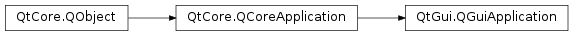

QGuiApplication¶
Inherited by: QApplication
Synopsis¶
Functions¶
- def
devicePixelRatio() - def
isSavingSession() - def
isSessionRestored() - def
sessionId() - def
sessionKey()
Signals¶
- def
applicationDisplayNameChanged() - def
applicationStateChanged(state) - def
commitDataRequest(sessionManager) - def
focusObjectChanged(focusObject) - def
focusWindowChanged(focusWindow) - def
fontChanged(font) - def
fontDatabaseChanged() - def
lastWindowClosed() - def
layoutDirectionChanged(direction) - def
paletteChanged(pal) - def
primaryScreenChanged(screen) - def
saveStateRequest(sessionManager) - def
screenAdded(screen) - def
screenRemoved(screen)
Static functions¶
- def
allWindows() - def
applicationDisplayName() - def
applicationState() - def
changeOverrideCursor(arg__1) - def
clipboard() - def
desktopFileName() - def
desktopSettingsAware() - def
focusObject() - def
focusWindow() - def
font() - def
inputMethod() - def
isFallbackSessionManagementEnabled() - def
isLeftToRight() - def
isRightToLeft() - def
keyboardModifiers() - def
layoutDirection() - def
modalWindow() - def
mouseButtons() - def
overrideCursor() - def
palette() - def
platformName() - def
primaryScreen() - def
queryKeyboardModifiers() - def
quitOnLastWindowClosed() - def
restoreOverrideCursor() - def
screenAt(point) - def
screens() - def
setApplicationDisplayName(name) - def
setDesktopFileName(name) - def
setDesktopSettingsAware(on) - def
setFallbackSessionManagementEnabled(arg__1) - def
setFont(arg__1) - def
setLayoutDirection(direction) - def
setOverrideCursor(arg__1) - def
setPalette(pal) - def
setQuitOnLastWindowClosed(quit) - def
setWindowIcon(icon) - def
styleHints() - def
sync() - def
topLevelAt(pos) - def
topLevelWindows() - def
windowIcon()
Detailed Description¶
The
PySide2.QtGui.QGuiApplicationclass manages the GUI application’s control flow and main settings.
PySide2.QtGui.QGuiApplicationcontains the main event loop, where all events from the window system and other sources are processed and dispatched. It also handles the application’s initialization and finalization, and provides session management. In addition,PySide2.QtGui.QGuiApplicationhandles most of the system-wide and application-wide settings.For any GUI application using Qt, there is precisely one
PySide2.QtGui.QGuiApplicationobject no matter whether the application has 0, 1, 2 or more windows at any given time. For non-GUI Qt applications, usePySide2.QtCore.QCoreApplicationinstead, as it does not depend on the Qt GUI module. ForPySide2.QtWidgets.QWidgetbased Qt applications, usePySide2.QtWidgets.QApplicationinstead, as it provides some functionality needed for creatingPySide2.QtWidgets.QWidgetinstances.The
PySide2.QtGui.QGuiApplicationobject is accessible through thePySide2.QtCore.QCoreApplication.instance()function, which returns a pointer equivalent to the globalqApp()pointer.
PySide2.QtGui.QGuiApplication‘s main areas of responsibility are:
- It initializes the application with the user’s desktop settings, such as
PySide2.QtGui.QGuiApplication.palette(),PySide2.QtGui.QGuiApplication.font()andPySide2.QtGui.QGuiApplication.styleHints(). It keeps track of these properties in case the user changes the desktop globally, for example, through some kind of control panel.- It performs event handling, meaning that it receives events from the underlying window system and dispatches them to the relevant widgets. You can send your own events to windows by using
PySide2.QtCore.QCoreApplication.sendEvent()andPySide2.QtCore.QCoreApplication.postEvent().- It parses common command line arguments and sets its internal state accordingly. See the
constructor documentationbelow for more details.- It provides localization of strings that are visible to the user via
PySide2.QtCore.QCoreApplication.translate().- It provides some magical objects like the
PySide2.QtGui.QGuiApplication.clipboard().- It knows about the application’s windows. You can ask which window is at a certain position using
PySide2.QtGui.QGuiApplication.topLevelAt(), get a list ofPySide2.QtGui.QGuiApplication.topLevelWindows(), etc.- It manages the application’s mouse cursor handling, see
PySide2.QtGui.QGuiApplication.setOverrideCursor()- It provides support for sophisticated session management. This makes it possible for applications to terminate gracefully when the user logs out, to cancel a shutdown process if termination isn’t possible and even to preserve the entire application’s state for a future session. See
PySide2.QtGui.QGuiApplication.isSessionRestored(),PySide2.QtGui.QGuiApplication.sessionId()andPySide2.QtGui.QGuiApplication.commitDataRequest()andPySide2.QtGui.QGuiApplication.saveStateRequest()for details.Since the
PySide2.QtGui.QGuiApplicationobject does so much initialization, it must be created before any other objects related to the user interface are created.PySide2.QtGui.QGuiApplicationalso deals with common command line arguments. Hence, it is usually a good idea to create it before any interpretation or modification ofargvis done in the application itself.
-
class
PySide2.QtGui.QGuiApplication¶ -
class
PySide2.QtGui.QGuiApplication(arg__1) Parameters: arg__1 – list of strings
-
static
PySide2.QtGui.QGuiApplication.allWindows()¶ Return type: Returns a list of all the windows in the application.
The list is empty if there are no windows.
-
static
PySide2.QtGui.QGuiApplication.applicationDisplayName()¶ Return type: unicode
-
PySide2.QtGui.QGuiApplication.applicationDisplayNameChanged()¶
-
static
PySide2.QtGui.QGuiApplication.applicationState()¶ Return type: PySide2.QtCore.Qt.ApplicationStateReturns the current state of the application.
You can react to application state changes to perform actions such as stopping/resuming CPU-intensive tasks, freeing/loading resources or saving/restoring application data.
-
PySide2.QtGui.QGuiApplication.applicationStateChanged(state)¶ Parameters: state – PySide2.QtCore.Qt.ApplicationState
-
static
PySide2.QtGui.QGuiApplication.changeOverrideCursor(arg__1)¶ Parameters: arg__1 – PySide2.QtGui.QCursorChanges the currently active application override cursor to
cursor.This function has no effect if
PySide2.QtGui.QGuiApplication.setOverrideCursor()was not called.
-
static
PySide2.QtGui.QGuiApplication.clipboard()¶ Return type: PySide2.QtGui.QClipboardReturns the object for interacting with the clipboard.
-
PySide2.QtGui.QGuiApplication.commitDataRequest(sessionManager)¶ Parameters: sessionManager – PySide2.QtGui.QSessionManager
-
static
PySide2.QtGui.QGuiApplication.desktopFileName()¶ Return type: unicode
-
static
PySide2.QtGui.QGuiApplication.desktopSettingsAware()¶ Return type: PySide2.QtCore.boolReturns
trueif Qt is set to use the system’s standard colors, fonts, etc.; otherwise returnsfalse. The default istrue.
-
PySide2.QtGui.QGuiApplication.devicePixelRatio()¶ Return type: PySide2.QtCore.qrealReturns the highest screen device pixel ratio found on the system. This is the ratio between physical pixels and device-independent pixels.
Use this function only when you don’t know which window you are targeting. If you do know the target window, use
QWindow.devicePixelRatio()instead.See also
-
static
PySide2.QtGui.QGuiApplication.focusObject()¶ Return type: PySide2.QtCore.QObjectReturns the
PySide2.QtCore.QObjectin currently active window that will be final receiver of events tied to focus, such as key events.
-
PySide2.QtGui.QGuiApplication.focusObjectChanged(focusObject)¶ Parameters: focusObject – PySide2.QtCore.QObject
-
static
PySide2.QtGui.QGuiApplication.focusWindow()¶ Return type: PySide2.QtGui.QWindowReturns the
PySide2.QtGui.QWindowthat receives events tied to focus, such as key events.
-
PySide2.QtGui.QGuiApplication.focusWindowChanged(focusWindow)¶ Parameters: focusWindow – PySide2.QtGui.QWindow
-
static
PySide2.QtGui.QGuiApplication.font()¶ Return type: PySide2.QtGui.QFontReturns the default application font.
-
PySide2.QtGui.QGuiApplication.fontChanged(font)¶ Parameters: font – PySide2.QtGui.QFont
-
PySide2.QtGui.QGuiApplication.fontDatabaseChanged()¶
-
static
PySide2.QtGui.QGuiApplication.inputMethod()¶ Return type: PySide2.QtGui.QInputMethodreturns the input method.
The input method returns properties about the state and position of the virtual keyboard. It also provides information about the position of the current focused input element.
See also
PySide2.QtGui.QInputMethod
-
static
PySide2.QtGui.QGuiApplication.isFallbackSessionManagementEnabled()¶ Return type: PySide2.QtCore.boolReturns whether
PySide2.QtGui.QGuiApplicationwill use fallback session management.The default is
true.If this is
trueand the session manager allows user interaction,PySide2.QtGui.QGuiApplicationwill try to close toplevel windows afterPySide2.QtGui.QGuiApplication.commitDataRequest()has been emitted. If a window cannot be closed, session shutdown will be canceled and the application will keep running.Fallback session management only benefits applications that have an “are you sure you want to close this window?” feature or other logic that prevents closing a toplevel window depending on certain conditions, and that do nothing to explicitly implement session management. In applications that do implement session management using the proper session management API, fallback session management interferes and may break session management logic.
Warning
If all windows are closed due to fallback session management and
PySide2.QtGui.QGuiApplication.quitOnLastWindowClosed()istrue, the application will quit before it is explicitly instructed to quit through the platform’s session management protocol. That violation of protocol may prevent the platform session manager from saving application state.
-
static
PySide2.QtGui.QGuiApplication.isLeftToRight()¶ Return type: PySide2.QtCore.boolReturns
trueif the application’s layout direction isQt.LeftToRight; otherwise returnsfalse.
-
static
PySide2.QtGui.QGuiApplication.isRightToLeft()¶ Return type: PySide2.QtCore.boolReturns
trueif the application’s layout direction isQt.RightToLeft; otherwise returnsfalse.
-
PySide2.QtGui.QGuiApplication.isSavingSession()¶ Return type: PySide2.QtCore.boolReturns
trueif the application is currently saving the session; otherwise returnsfalse.This is
truewhenPySide2.QtGui.QGuiApplication.commitDataRequest()andPySide2.QtGui.QGuiApplication.saveStateRequest()are emitted, but also when the windows are closed afterwards by session management.
-
PySide2.QtGui.QGuiApplication.isSessionRestored()¶ Return type: PySide2.QtCore.boolReturns
trueif the application has been restored from an earlier session; otherwise returnsfalse.
-
static
PySide2.QtGui.QGuiApplication.keyboardModifiers()¶ Return type: PySide2.QtCore.Qt.KeyboardModifiersReturns the current state of the modifier keys on the keyboard. The current state is updated sychronously as the event queue is emptied of events that will spontaneously change the keyboard state (
QEvent.KeyPressandQEvent.KeyReleaseevents).It should be noted this may not reflect the actual keys held on the input device at the time of calling but rather the modifiers as last reported in one of the above events. If no keys are being held
Qt.NoModifieris returned.
-
PySide2.QtGui.QGuiApplication.lastWindowClosed()¶
-
static
PySide2.QtGui.QGuiApplication.layoutDirection()¶ Return type: PySide2.QtCore.Qt.LayoutDirection
-
PySide2.QtGui.QGuiApplication.layoutDirectionChanged(direction)¶ Parameters: direction – PySide2.QtCore.Qt.LayoutDirection
-
static
PySide2.QtGui.QGuiApplication.modalWindow()¶ Return type: PySide2.QtGui.QWindowReturns the most recently shown modal window. If no modal windows are visible, this function returns zero.
A modal window is a window which has its
PySide2.QtGui.QWindow.modality()property set toQt.WindowModalorQt.ApplicationModal. A modal window must be closed before the user can continue with other parts of the program.Modal window are organized in a stack. This function returns the modal window at the top of the stack.
See also
Qt.WindowModalityQWindow.setModality()
-
static
PySide2.QtGui.QGuiApplication.mouseButtons()¶ Return type: PySide2.QtCore.Qt.MouseButtonsReturns the current state of the buttons on the mouse. The current state is updated syncronously as the event queue is emptied of events that will spontaneously change the mouse state (
QEvent.MouseButtonPressandQEvent.MouseButtonReleaseevents).It should be noted this may not reflect the actual buttons held on the input device at the time of calling but rather the mouse buttons as last reported in one of the above events. If no mouse buttons are being held
Qt.NoButtonis returned.
-
static
PySide2.QtGui.QGuiApplication.overrideCursor()¶ Return type: PySide2.QtGui.QCursorReturns the active application override cursor.
This function returns 0 if no application cursor has been defined (i.e. the internal cursor stack is empty).
-
static
PySide2.QtGui.QGuiApplication.palette()¶ Return type: PySide2.QtGui.QPaletteReturns the default application palette.
-
PySide2.QtGui.QGuiApplication.paletteChanged(pal)¶ Parameters: pal – PySide2.QtGui.QPalette
-
static
PySide2.QtGui.QGuiApplication.platformName()¶ Return type: unicode
-
static
PySide2.QtGui.QGuiApplication.primaryScreen()¶ Return type: PySide2.QtGui.QScreen
-
PySide2.QtGui.QGuiApplication.primaryScreenChanged(screen)¶ Parameters: screen – PySide2.QtGui.QScreen
-
static
PySide2.QtGui.QGuiApplication.queryKeyboardModifiers()¶ Return type: PySide2.QtCore.Qt.KeyboardModifiersQueries and returns the state of the modifier keys on the keyboard. Unlike
PySide2.QtGui.QGuiApplication.keyboardModifiers(), this method returns the actual keys held on the input device at the time of calling the method.It does not rely on the keypress events having been received by this process, which makes it possible to check the modifiers while moving a window, for instance. Note that in most cases, you should use
PySide2.QtGui.QGuiApplication.keyboardModifiers(), which is faster and more accurate since it contains the state of the modifiers as they were when the currently processed event was received.
-
static
PySide2.QtGui.QGuiApplication.quitOnLastWindowClosed()¶ Return type: PySide2.QtCore.bool
-
static
PySide2.QtGui.QGuiApplication.restoreOverrideCursor()¶ Undoes the last
PySide2.QtGui.QGuiApplication.setOverrideCursor().If
PySide2.QtGui.QGuiApplication.setOverrideCursor()has been called twice, calling will activate the first cursor set. Calling this function a second time restores the original widgets’ cursors.
-
PySide2.QtGui.QGuiApplication.saveStateRequest(sessionManager)¶ Parameters: sessionManager – PySide2.QtGui.QSessionManager
-
PySide2.QtGui.QGuiApplication.screenAdded(screen)¶ Parameters: screen – PySide2.QtGui.QScreen
-
static
PySide2.QtGui.QGuiApplication.screenAt(point)¶ Parameters: point – PySide2.QtCore.QPointReturn type: PySide2.QtGui.QScreenReturns the screen at
point, ornullptrif outside of any screen.The
pointis in relation to the virtualGeometry() of each set of virtual siblings. If the point maps to more than one set of virtual siblings the first match is returned.
-
PySide2.QtGui.QGuiApplication.screenRemoved(screen)¶ Parameters: screen – PySide2.QtGui.QScreen
-
static
PySide2.QtGui.QGuiApplication.screens()¶ Return type: Returns a list of all the screens associated with the windowing system the application is connected to.
-
PySide2.QtGui.QGuiApplication.sessionId()¶ Return type: unicode Returns the current session’s identifier.
If the application has been restored from an earlier session, this identifier is the same as it was in that previous session. The session identifier is guaranteed to be unique both for different applications and for different instances of the same application.
-
PySide2.QtGui.QGuiApplication.sessionKey()¶ Return type: unicode Returns the session key in the current session.
If the application has been restored from an earlier session, this key is the same as it was when the previous session ended.
The session key changes every time the session is saved. If the shutdown process is cancelled, another session key will be used when shutting down again.
-
static
PySide2.QtGui.QGuiApplication.setApplicationDisplayName(name)¶ Parameters: name – unicode
-
static
PySide2.QtGui.QGuiApplication.setDesktopFileName(name)¶ Parameters: name – unicode
-
static
PySide2.QtGui.QGuiApplication.setDesktopSettingsAware(on)¶ Parameters: on – PySide2.QtCore.boolSets whether Qt should use the system’s standard colors, fonts, etc., to
on. By default, this istrue.This function must be called before creating the
PySide2.QtGui.QGuiApplicationobject, like this:int main(int argc, char *argv[]) { QApplication::setDesktopSettingsAware(false); QApplication app(argc, argv); ... return app.exec(); }
-
static
PySide2.QtGui.QGuiApplication.setFallbackSessionManagementEnabled(arg__1)¶ Parameters: arg__1 – PySide2.QtCore.boolSets whether
PySide2.QtGui.QGuiApplicationwill use fallback session management toenabled.
-
static
PySide2.QtGui.QGuiApplication.setFont(arg__1)¶ Parameters: arg__1 – PySide2.QtGui.QFontChanges the default application font to
font.See also
-
static
PySide2.QtGui.QGuiApplication.setLayoutDirection(direction)¶ Parameters: direction – PySide2.QtCore.Qt.LayoutDirection
-
static
PySide2.QtGui.QGuiApplication.setOverrideCursor(arg__1)¶ Parameters: arg__1 – PySide2.QtGui.QCursorSets the application override cursor to
cursor.Application override cursors are intended for showing the user that the application is in a special state, for example during an operation that might take some time.
This cursor will be displayed in all the application’s widgets until
PySide2.QtGui.QGuiApplication.restoreOverrideCursor()or another is called.Application cursors are stored on an internal stack. pushes the cursor onto the stack, and
PySide2.QtGui.QGuiApplication.restoreOverrideCursor()pops the active cursor off the stack.PySide2.QtGui.QGuiApplication.changeOverrideCursor()changes the curently active application override cursor.Every must eventually be followed by a corresponding
PySide2.QtGui.QGuiApplication.restoreOverrideCursor(), otherwise the stack will never be emptied.Example:
QApplication::setOverrideCursor(QCursor(Qt::WaitCursor)); calculateHugeMandelbrot(); // lunch time... QApplication::restoreOverrideCursor();
-
static
PySide2.QtGui.QGuiApplication.setPalette(pal)¶ Parameters: pal – PySide2.QtGui.QPaletteChanges the default application palette to
pal.
-
static
PySide2.QtGui.QGuiApplication.setQuitOnLastWindowClosed(quit)¶ Parameters: quit – PySide2.QtCore.bool
-
static
PySide2.QtGui.QGuiApplication.setWindowIcon(icon)¶ Parameters: icon – PySide2.QtGui.QIcon
-
static
PySide2.QtGui.QGuiApplication.styleHints()¶ Return type: PySide2.QtGui.QStyleHintsReturns the application’s style hints.
The style hints encapsulate a set of platform dependent properties such as double click intervals, full width selection and others.
The hints can be used to integrate tighter with the underlying platform.
See also
PySide2.QtGui.QStyleHints
-
static
PySide2.QtGui.QGuiApplication.sync()¶ Function that can be used to sync Qt state with the Window Systems state.
This function will first empty Qts events by calling
QCoreApplication.processEvents(), then the platform plugin will sync up with the windowsystem, and finally Qts events will be delived by another call toQCoreApplication.processEvents();This function is timeconsuming and its use is discouraged.
-
static
PySide2.QtGui.QGuiApplication.topLevelAt(pos)¶ Parameters: pos – PySide2.QtCore.QPointReturn type: PySide2.QtGui.QWindowReturns the top level window at the given position
pos, if any.
-
static
PySide2.QtGui.QGuiApplication.topLevelWindows()¶ Return type: Returns a list of the top-level windows in the application.
-
static
PySide2.QtGui.QGuiApplication.windowIcon()¶ Return type: PySide2.QtGui.QIcon
© 2018 The Qt Company Ltd. Documentation contributions included herein are the copyrights of their respective owners. The documentation provided herein is licensed under the terms of the GNU Free Documentation License version 1.3 as published by the Free Software Foundation. Qt and respective logos are trademarks of The Qt Company Ltd. in Finland and/or other countries worldwide. All other trademarks are property of their respective owners.